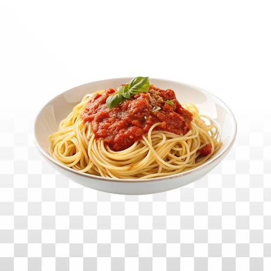

Spaghetti
Home

Spaghetti is such a good meal. So easy to make a lot of it and eat for days!!! And there's so many sauces to pick from. I personally love the Preggo Mushroom one.
I'm going to give you the one serving recipe for this but obviously you can do the math and easily expand this.
Ingredients
- 1 chicken breast
- Half a can of black beans
- 5-8 tortillas depending on how much you want to stuff them
- 1 avocado
- Sour cream or fat free plain yogurt
- Monterey Jack or your favorite cheese
- Half a can of corn (optional but if you need to make them more filling it helps)
Steps
- Boil chicken until done and then shred it
- Season the chicken with your favorite seasonings then butter a pan and brown the chicken
- Remove the chicken from the pan and heat up the beans
- Season and mash up the beans(add a little bit of water if needed) Go ahead and sprinkle the cheease to the beans
- Mix chicken and beans together
- Smash your avocado, add salt, pepper, and garlic powder to it for a quick guac
- Add your fillings to the taco and top with guac and sour cream/yogurt
- Enjoy!